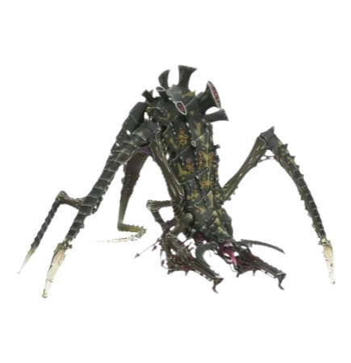

Tyranids að gera árás á Orkana.Tyranid tyrant guard að vernda Hive tyrant.(skepnan með fjóru hendurnar í
bakgrunninum)Eldar álfarnir (góðu álfarnir) og Tyranids í miðjum bardaga.Druhkarii álfarnir (vondu álfarnir) að vera umkrindir af Tyranid skepnunum.
Hér er gömull mynd af safninu mínu, restin af því er í hrúguni í bakgrunninum!
Hérna er mynd af Tyranids sem eru í miðjum bardaga.

Hierophant
HierophantMini
A Tyranid Hierophant
The Hierophant Bio-Titan is an immense, hideous creature, towering over the battlefield and bristling with spines, tendrils and symbiote weapons. They are amongst the largest bioforms yet encountered by the forces of the Imperium amongst the swarms of the hive fleets, comparable in size and power to an Imperial Titan. A brood of Hierophants are likely to be at the forefront of a major Tyranid attack -- striding forwards, drawing enemy heavy weapons fire away from the lesser creatures of the swarm, absorbing huge amounts of damage before smashing into the enemy line with devastating force.
Viciator
A Tyranid Viciator, a Bio-Titan strain directly derived from the Hierophant.
The Hierophant is the Tyranids' largest shock trooper, armed with monstrous Bio-Cannons, multiple claws and razor-sharp blades, armoured with a thick chitinous hide that exudes poisonous spores from rends in its plates. Like all Tyranid bioforms, the Bio-Titan seems to be able to mutate its genome rapidly, evolving new organic weapons and defences.
Other variants of the Hierophant Bio-Titan, such as the less well-known Viciator, have been identified with huge crushing claws or long scythe-like blades, cluster spines and other bio-weapons. How the Tyranids have developed such large biological constructs remains a mystery to the Imperium's Xenos Biologis. Whilst it seems a Hive Tyrant or Carnifex could easily be the result of a further genetic manipulation of the basic Tyranid Warrior genotype, there is no known genetic antecedent among the existing Tyranid bioforms for the Hierophant.
It is speculated by the Magi Biologis of the Adeptus Mechanicus that the Hierophant was derived from the combined genetic strains of the Tyranid Carnifex and the Dominatrix. The forces of the Imperium have learned that combating Hierophants is simply a matter of applying the heaviest firepower available; large ordnance weapons and heavy artillery have so far proved the only effective weapons in destroying Bio-Titans.